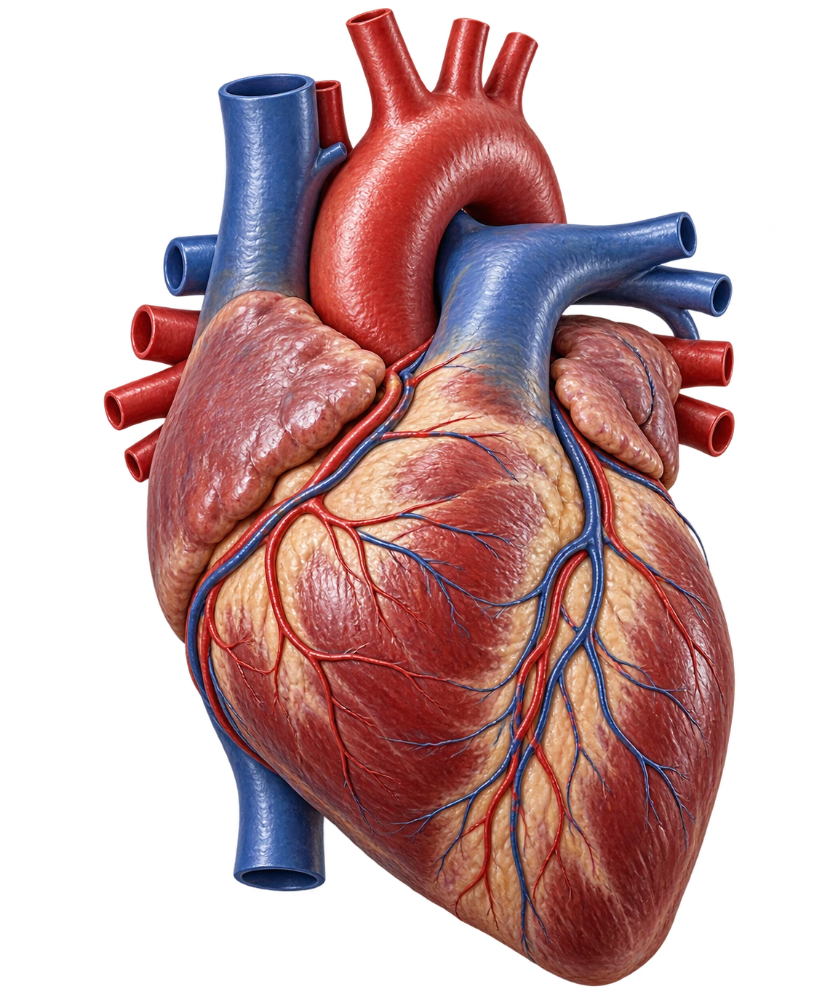

Recognise
Distinguish the main word-building components.
 MedLexMEDICAL TERMINOLOGY
MedLexMEDICAL TERMINOLOGY Healthcare CrownAcademy
Healthcare CrownAcademyMEDLEX / TERRACOTTA
MedLexTHE LANGUAGE OF MEDICINEHealthcare Crown AcademyFOUNDATIONS / LESSON 04
Build a useful word bank through careful spelling, valid examples and repeated explanation.
OUTLINE & OBJECTIVES
By the end, connect a form, its meaning and a real example.
Distinguish the main word-building components.
Apply common joining rules to accepted clinical examples.
Check spelling, pronunciation and the complete meaning.
Use the words in a plain-language explanation and revisit them later.
SOURCESOpen RN / Components and categoriesOpen RN / Roots and combining vowels
WHY IT MATTERS
Vocabulary is a practical communication skill.
Recognise common structures across clinical specialties.
Distinguish a symptom, a condition and a procedure.
Translate the medical term into a simple accurate sentence, then check understanding.
SOURCESNLM / Understanding Medical WordsOpen RN / Components and categories
THE FUNDAMENTALS
Many medical terms can be analysed into familiar pieces.
Root + vowel, such as hepat/o. Not every medical word contains all four components.
SOURCESOpen RN / Components and categoriesOpen RN / Roots and combining vowelsNLM / Understanding Medical Words
WORD PARTS IN ACTION
Select to reveal the meaning and an example.
SOURCESNLM / Medical word partsOpen RN / Roots and combining vowels
BUILDING RULES
General patterns reduce guesswork.
hepat/itis → hepatitis. The combining vowel is usually omitted.
cardi/o/logy → cardiology. The vowel is usually retained.
gastr/o/enter/o/logy → gastroenterology. Vowels connect the parts.
sub/hepat/ic → subhepatic. No extra o follows the prefix.
Established spelling and clinical meaning take priority over mechanical assembly.
SOURCESOpen RN / Roots and combining vowelseCampusOntario / Word parts in medical terms
WORD-BUILDING LAB
Predict the spelling, build the term, then explain why it looks that way.
SOURCESNLM / Medical word partsOpen RN / Roots and combining vowelsNIAMS / Osteoarthritis
COMBINING FORMS
Store the form, meaning and example together.
| FORM | MEANING | EXAMPLE |
|---|---|---|
| cardi/o | heart | cardiology |
| nephr/o | kidney | nephrology |
| dermat/o | skin | dermatology |
| neur/o | nerve | neuropathy |
| hemat/o | blood | haematology |
| pulmon/o | lung | pulmonary |
| encephal/o | brain | encephalitis |
Learn the accepted term; do not add an o simply to make an imagined word sound smoother.
SOURCESNLM / Medical word partsOpen RN / Roots and combining vowels
FROM STRUCTURE TO LANGUAGE
A visual anchor helps you connect the word to its meaning.

cardi/o → heart.
cardi/o/megaly → cardiomegaly.
“Enlargement of the heart.” The word identifies a finding, not its cause.
SOURCESNLM / Medical word partsOpen RN / Components and categories
SPELLING & PRONUNCIATION
There is no universal stress rule that works for every medical term.
dyspnoea/dyspnea; anaemia/anemia; oedema/edema. Choose one style consistently.
Use a reliable dictionary or supplied audio for syllables and stress. Break unfamiliar words into learnable parts.
vertebra → vertebrae; diagnosis → diagnoses; bacterium → bacteria. Check exceptions.
Read the complete term. Check the prefix, the ending and whether a linking vowel belongs.
SOURCESOpen educational text / Medical language rulesNLM / Medical word partsMerriam-Webster / Medical dictionary
KNOWLEDGE CHECK
Explain your answer before you select it.
SOURCESNLM / Medical word partsOpen RN / Roots and combining vowels
REFERENCE LIBRARY
Use primary and open educational references for continued practice.
NLM · MedlinePlus
NLM · MedlinePlus
Open RN · Medical Terminology 2e · CC BY 4.0
Open RN · Medical Terminology 2e · CC BY 4.0
eCampusOntario · Building a Medical Terminology Foundation 2e · CC BY 4.0
Open educational text · Medical Terminology
Original teaching summaries, revised against the linked references on 19 October 2026. Open RN and eCampusOntario material is adapted with attribution under CC BY 4.0. Images are generated or retained generated teaching artwork, not archival photographs or diagnostic images.
SOURCES
SUMMARY & NEXT STEP
A small, repeatable learning routine.
Write a combining form, its meaning and one accepted example.
Cover the meaning and retrieve it before checking.
Explain the complete term in a brief plain-language sentence.
Review the same terms tomorrow and later in the week.
Explain hepatitis and hepatomegaly. Name what the terms share, what changes, and what neither term tells you about the cause.
SOURCESNLM / Medical word partsOpen RN / Roots and combining vowels